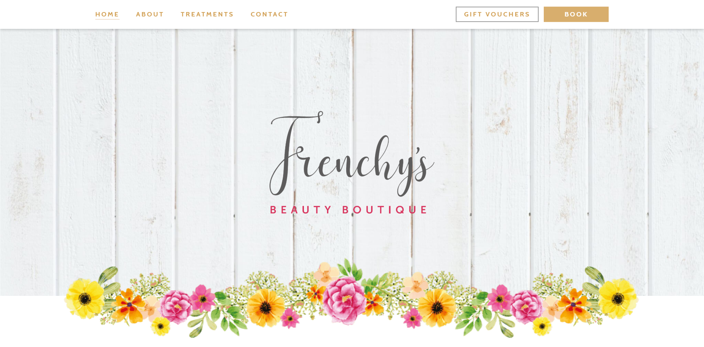

← all projects
Beauty boutique website
This project regards the development of a website from my client's mockups. The mockups were designed for desktops and mobile, so the challenge was to develop the website with a mobile-first view and to respect the responsive designs.
- 2020
- Web Development
- WordPress
see website

The website was developed with WordPress. It was mainly front-end development. I used a theme that my client provided, which includes a content builder. Then, I used CSS for styling.
Have a similar project in mind? Get in touch